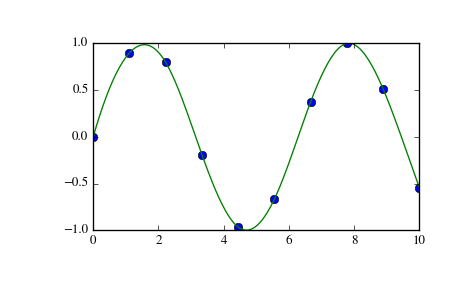

scipy.interpolate.splrep¶
- scipy.interpolate.splrep(x, y, w=None, xb=None, xe=None, k=3, task=0, s=None, t=None, full_output=0, per=0, quiet=1)[source]¶
Find the B-spline representation of 1-D curve.
Given the set of data points (x[i], y[i]) determine a smooth spline approximation of degree k on the interval xb <= x <= xe.
Parameters: x, y : array_like
The data points defining a curve y = f(x).
w : array_like, optional
Strictly positive rank-1 array of weights the same length as x and y. The weights are used in computing the weighted least-squares spline fit. If the errors in the y values have standard-deviation given by the vector d, then w should be 1/d. Default is ones(len(x)).
xb, xe : float, optional
The interval to fit. If None, these default to x[0] and x[-1] respectively.
k : int, optional
The order of the spline fit. It is recommended to use cubic splines. Even order splines should be avoided especially with small s values. 1 <= k <= 5
task : {1, 0, -1}, optional
If task==0 find t and c for a given smoothing factor, s.
If task==1 find t and c for another value of the smoothing factor, s. There must have been a previous call with task=0 or task=1 for the same set of data (t will be stored an used internally)
If task=-1 find the weighted least square spline for a given set of knots, t. These should be interior knots as knots on the ends will be added automatically.
s : float, optional
A smoothing condition. The amount of smoothness is determined by satisfying the conditions: sum((w * (y - g))**2,axis=0) <= s where g(x) is the smoothed interpolation of (x,y). The user can use s to control the tradeoff between closeness and smoothness of fit. Larger s means more smoothing while smaller values of s indicate less smoothing. Recommended values of s depend on the weights, w. If the weights represent the inverse of the standard-deviation of y, then a good s value should be found in the range (m-sqrt(2*m),m+sqrt(2*m)) where m is the number of datapoints in x, y, and w. default : s=m-sqrt(2*m) if weights are supplied. s = 0.0 (interpolating) if no weights are supplied.
t : array_like, optional
The knots needed for task=-1. If given then task is automatically set to -1.
full_output : bool, optional
If non-zero, then return optional outputs.
per : bool, optional
If non-zero, data points are considered periodic with period x[m-1] - x[0] and a smooth periodic spline approximation is returned. Values of y[m-1] and w[m-1] are not used.
quiet : bool, optional
Non-zero to suppress messages. This parameter is deprecated; use standard Python warning filters instead.
Returns: tck : tuple
(t,c,k) a tuple containing the vector of knots, the B-spline coefficients, and the degree of the spline.
fp : array, optional
The weighted sum of squared residuals of the spline approximation.
ier : int, optional
An integer flag about splrep success. Success is indicated if ier<=0. If ier in [1,2,3] an error occurred but was not raised. Otherwise an error is raised.
msg : str, optional
A message corresponding to the integer flag, ier.
See also
UnivariateSpline, BivariateSpline, splprep, splev, sproot, spalde, splint, bisplrep, bisplev
Notes
See splev for evaluation of the spline and its derivatives. Uses the FORTRAN routine curfit from FITPACK.
If provided, knots t must satisfy the Schoenberg-Whitney conditions, i.e., there must be a subset of data points x[j] such that t[j] < x[j] < t[j+k+1], for j=0, 1,...,n-k-2.
References
Based on algorithms described in [R66], [R67], [R68], and [R69]:
[R66] (1, 2) P. Dierckx, “An algorithm for smoothing, differentiation and integration of experimental data using spline functions”, J.Comp.Appl.Maths 1 (1975) 165-184. [R67] (1, 2) P. Dierckx, “A fast algorithm for smoothing data on a rectangular grid while using spline functions”, SIAM J.Numer.Anal. 19 (1982) 1286-1304. [R68] (1, 2) P. Dierckx, “An improved algorithm for curve fitting with spline functions”, report tw54, Dept. Computer Science,K.U. Leuven, 1981. [R69] (1, 2) P. Dierckx, “Curve and surface fitting with splines”, Monographs on Numerical Analysis, Oxford University Press, 1993. Examples
>>> import matplotlib.pyplot as plt >>> from scipy.interpolate import splev, splrep >>> x = np.linspace(0, 10, 10) >>> y = np.sin(x) >>> tck = splrep(x, y) >>> x2 = np.linspace(0, 10, 200) >>> y2 = splev(x2, tck) >>> plt.plot(x, y, 'o', x2, y2) >>> plt.show()
